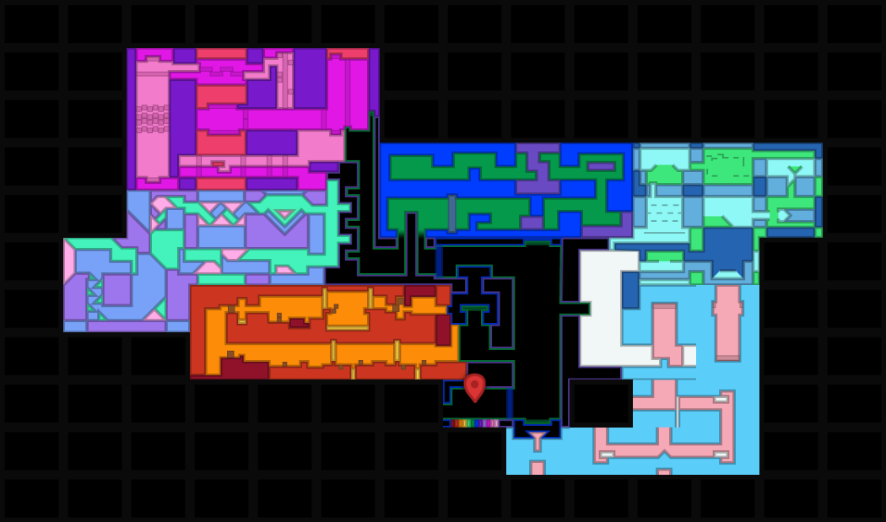
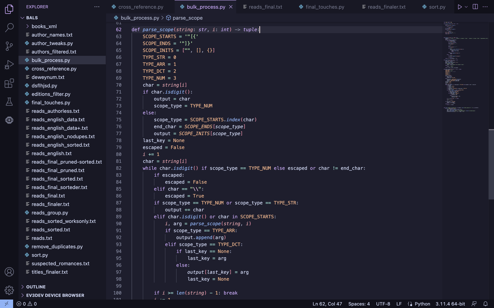

I have experience making games in both Unity and Godot. Additionally, I am fluent in several programming languages, including C#, GDScript, Rust, C#, C++, Java, and Lua.
Games
Here are some cool games I made.
Mirror Image
Mirror Image is a 2D puzzle-platforming game I made in my sophomore year of high school. It was made using Unity (2019.4).
This was my first standalone game. The process of making it taught me a lot about iterative design and responding to player feedback.

Biblically Accurate Library Simulator
Biblically Accurate Library Simulator (BALS) is a 3D horror game set in a library. I made it using Unity (2022.3) in my junior year, working together with another classmate.
BALS was my first time making a 3D game, and my first time working in a group. It taught me the basics of 3D modeling. I had to do a lot of draw-call optimization, which included baking static meshes for each shelf. Also some manual IK!
It also required a lot of external data processing on the book list, which was originally downloaded as a data dump from openlibrary.org. I did the bulk of the processing in Python.

Nearly Every Day Together
Nearly Every Day Together is a 2-player 2D co-op platformer. I made it using Godot (4.4-4.5) in my senior year.
Avery Simulator 2025
Avery Simulator 2025 is a short visual novel game set in my own house. I made it in a month (as a birthday present for my sibling) using Godot in my junior year. It has both 2D and 3D elements.
Kate Simulator 2025
foo
Assets
Here are some cool assets I made, outside of game work.